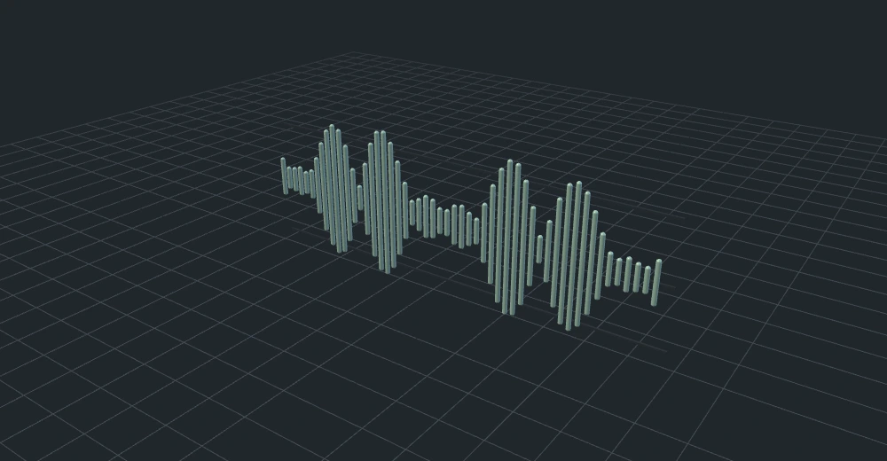
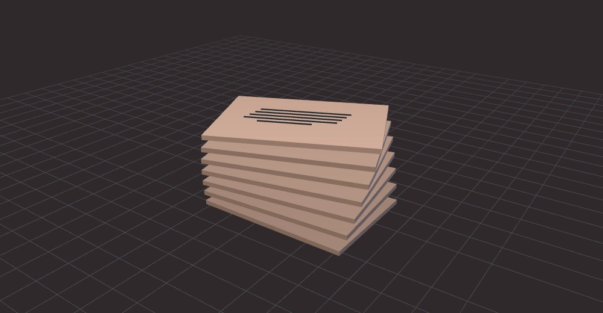

Statvello
I’m building a sports broadcast console that combines live video, player identification, and real-time match data so operators can put graphics on air.
Software & machine learning
I build software for live broadcasts, machine learning, and the people behind the controls. CS at UT Dallas.
Explore my work
I’m building a sports broadcast console that combines live video, player identification, and real-time match data so operators can put graphics on air.

A React and FastAPI application that turns medical reports into patient-friendly summaries, with authenticated uploads and downloadable PDFs.
A travel planner that brings exchange rates, trip budgets, and itineraries together. I helped build its Temporal Fusion Transformer to forecast currency trends.
A full-stack app for exploring prices, market history, and seven-day forecasts. FastAPI connects Yahoo Finance and Finnhub data to an XGBoost model and stores predictions in Supabase.
Profile
I study computer science at UT Dallas. I enjoy the backend work behind a useful interface, from designing APIs to training models on real-world data.
May–August 2026 · Developed operator workflows for real-time broadcast software and tested multi-machine systems with Vitest and Cypress.
September–December 2025 · Worked with the AIM team on currency prediction and travel budgeting for TravelBudgetFX.
December 2024–present · Assist residents, maintain housing records, and coordinate with staff to resolve student concerns.
B.S. in Computer Science, expected May 2028. Minor in Business Intelligence and Analytics. Collegium V Honors Program.
Python, C++, SQL, NumPy, Pandas, React, Node.js, MongoDB, Git, JavaScript, HTML5, and CSS3.
Machine Learning with Python · IBM (Coursera)
Python Programming Fundamentals · Microsoft (Coursera)
Collegium V Honors · Hobson Wildenthal Honors College
Dean’s List · Fall 2024
Academic Excellence Scholarship · UT Dallas
Contact